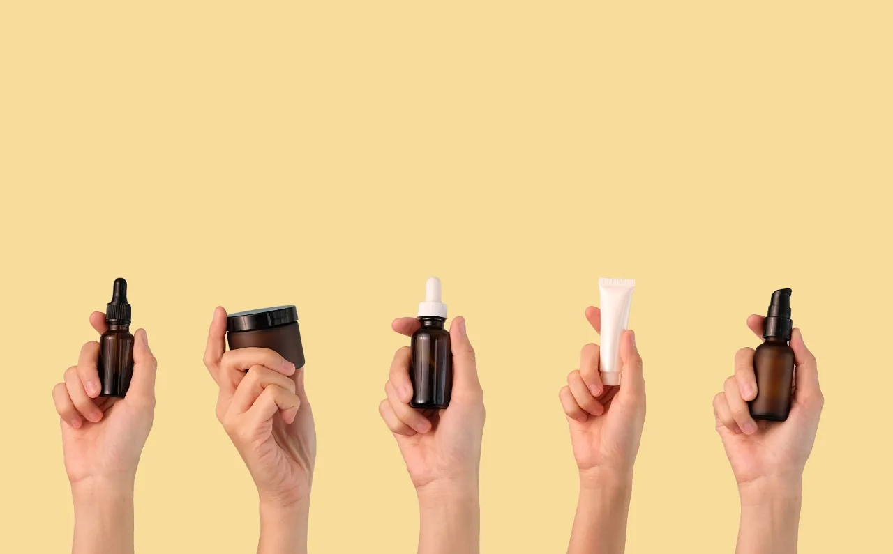
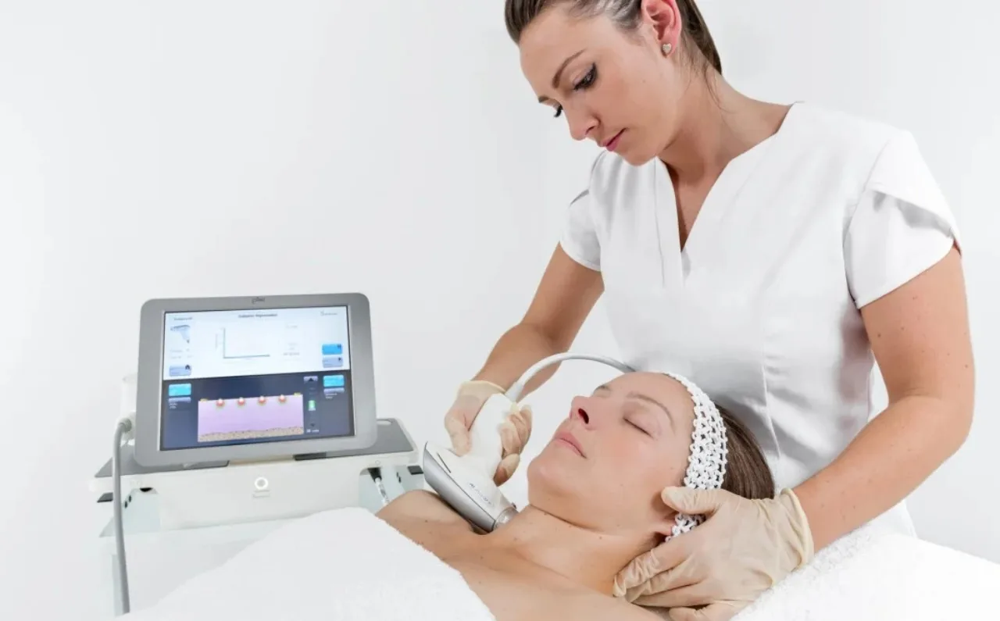
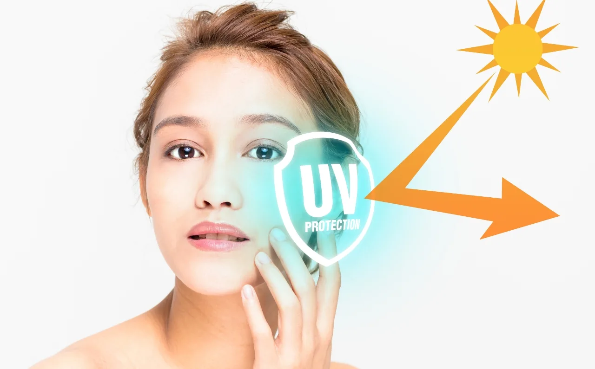
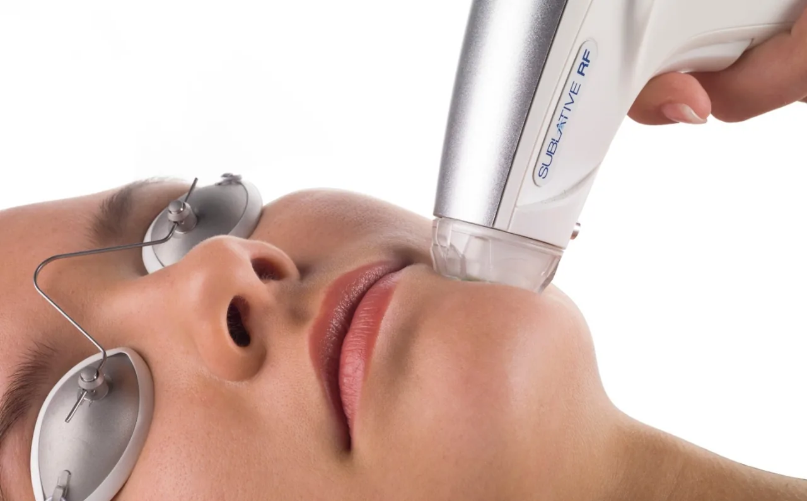
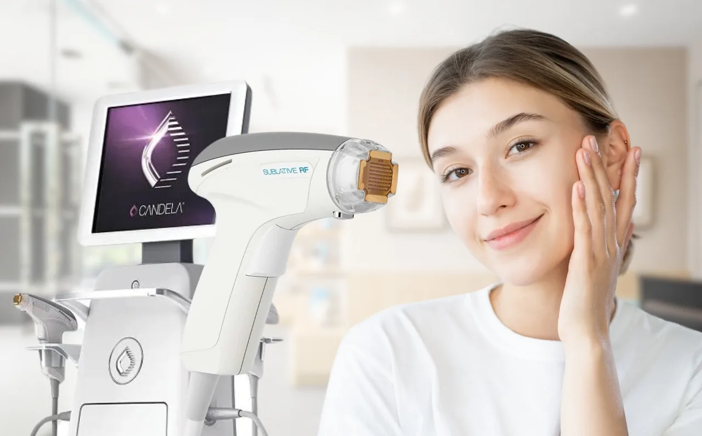

Achieving radiant, glowing skin—your #GlowGoals—is more than just a trend; it’s a reflection of overall skin health and confidence. In a world filled with skincare options, finding a path that works for your unique needs can feel overwhelming.
The good news?
Glowing skin isn’t reserved for a lucky few; with the right approach, anyone can work towards a brighter, healthier complexion!
At Dr Abby Clinic, we believe that achieving your #GlowGoals starts with a combination of self-care, consistency, and the right treatments tailored to your skin.
In this blog, we’ll explore six essential tips to help you achieve and maintain your glow. Whether it’s simple lifestyle tweaks or embracing innovative treatments like Sublative eMatrix, these steps will guide you on your journey to radiant, healthy skin.
Tip 1: Hydrate, Inside and Out

Hydration is key to achieving your #GlowGoals! Drinking water helps keep your skin healthy and radiant, both inside and out.
Hydration is key to achieving glowing, healthy skin. It’s not just about drinking enough water, but also about ensuring your skin’s outer layer retains moisture effectively.
When your skin is hydrated, it appears plump, smooth, and radiant—while dry skin can often look dull, flaky, and prone to irritation.
Hydrate from the Inside
The foundation of glowing skin starts from within. Drinking sufficient water throughout the day helps flush out toxins and supports your body’s natural processes, including the regeneration of skin cells.
Aim to drink at least eight glasses of water daily, and remember that your skin’s hydration needs can vary depending on factors like climate and activity levels.
Hydrate from the Outside
External hydration is equally important. Choose a moisturiser suited to your skin type to lock in water and keep your skin’s barrier intact. Look for ingredients like hyaluronic acid, glycerin, and ceramides, which help draw moisture into the skin and prevent water loss.
For an added boost, consider incorporating hydrating serums into your routine to target specific skin concerns like dryness or fine lines.
Why Hydration Matters for Your Glow
Adequate hydration not only improves your skin’s appearance but also enhances its overall health. When your skin is properly hydrated, it can better defend against environmental stressors and repair itself more effectively. Plus, hydrated skin is more responsive to treatments like Sublative eMatrix, allowing for deeper penetration and better results.
By making hydration a priority, both internally and externally, you’re laying the foundation for a glowing complexion that lasts.
Tip 2: Commit to a Consistent Skincare Routine

Achieve radiant skin by staying consistent with your skincare routine. Choosing the right products, like these, is key to reaching your #GlowGoals.
Achieving glowing skin requires more than just occasional treatments or products—it’s about consistency. Just like any health regimen, maintaining a steady skincare routine is essential for long-lasting results. Over time, consistency helps build a healthy skin barrier, improve texture, and address concerns like fine lines, uneven tone, and acne.
The Core of an Effective Skincare Routine
An effective skincare routine doesn’t have to be complicated; it’s all about incorporating the right steps for your skin’s unique needs. Here are the key elements to include:
- Cleansing: Proper cleansing removes dirt, excess oil, and impurities, allowing your skin to breathe and absorb the benefits of the products that follow. Aim to cleanse your skin twice a day—once in the morning and once before bed. Choose a gentle cleanser suited to your skin type to avoid stripping the skin of its natural oils.
- Exfoliating: Regular exfoliation helps remove dead skin cells, revealing a smoother, brighter complexion underneath. This step enhances your skin’s ability to absorb hydrating products and can help prevent clogged pores. However, be mindful not to over-exfoliate; 2-3 times a week is typically sufficient for most skin types.
- Moisturising: As mentioned in Tip 1, hydrating the skin is crucial. A good moisturiser helps lock in hydration and keeps your skin soft and plump. Choose one that’s appropriate for your skin type—lightweight gels for oily skin, or richer creams for dry skin.
- Sunscreen: Sunscreen is one of the most important steps in any skincare routine. Daily protection from UV rays helps prevent premature ageing, pigmentation, and skin cancer. Opt for a broad-spectrum SPF of at least 30, and apply it every morning, even on cloudy days.
Why Consistency is Key
Just as you wouldn’t expect to see results from a fitness plan after one workout, your skin requires regular care to show its best results. Over time, the effects of a consistent skincare routine will add up, improving skin texture, tone, and overall health.
Tip 3: Incorporate Advanced Treatments for Enhanced Results

Achieve your #GlowGoals with advanced treatments like Sublative eMatrix, designed to rejuvenate and enhance your skin’s natural radiance.
While a consistent skincare routine is essential for maintaining healthy, glowing skin, incorporating advanced treatments can provide that extra boost for more noticeable, lasting results. One such treatment is Sublative eMatrix, an advance solution that targets skin concerns like uneven tone, texture, and loss of radiance.
What is Sublative eMatrix?
Sublative eMatrix is a non-invasive, energy-based treatment that uses radiofrequency (RF) technology to rejuvenate the skin. By delivering controlled energy below the skin’s surface, it stimulates the production of collagen and elastin—two essential proteins that keep the skin firm, smooth, and youthful. This process helps to improve skin texture, reduce fine lines, and restore a natural, healthy glow.
The treatment is particularly effective for addressing skin concerns such as uneven pigmentation, acne scars, enlarged pores, and general skin laxity.
With minimal downtime and discomfort, Sublative eMatrix offers a safe and convenient option for those looking to enhance their skin’s appearance without resorting to invasive procedures.
Why Sublative eMatrix Works
What sets Sublative eMatrix apart from other treatments is its ability to target deep layers of the skin while leaving the outermost layer intact. This ensures faster healing times and reduces the risk of irritation. The treatment is gentle yet effective, making it suitable for various skin types, including sensitive skin.
Additionally, the results are progressive, with most clients noticing smoother, firmer skin after just a few sessions. Over time, as collagen production increases, your skin will continue to improve, giving you that radiant, youthful glow you desire.
Safety and Suitability for All Skin Types
Sublative eMatrix is a safe, FDA-approved treatment suitable for a wide range of skin tones and types. Whether you have dry, oily, or combination skin, the treatment can be tailored to your specific needs. Its non-invasive nature also means it requires little downtime, so you can return to your daily activities without a lengthy recovery period.
By incorporating advanced treatments like Sublative eMatrix into your skincare routine, you can take your #GlowGoals to the next level—achieving smoother, brighter, and more youthful-looking skin with ease.
Tip 4: Nourish Your Skin from Within
Fuel your skin with nutrient-rich foods like avocado to promote a natural glow from the inside out.
True skin health isn’t just about what you apply to the surface—it’s also about what you put into your body. A balanced diet filled with antioxidants, vitamins, and healthy fats can help nourish your skin from the inside out, supporting a natural glow and fighting the signs of aging.
The Role of Nutrition in Skin Health
What you eat plays a crucial role in the appearance and condition of your skin. Antioxidants, vitamins, and healthy fats help to protect the skin from environmental damage, reduce inflammation, and encourage the repair of damaged cells. Consuming a diet rich in these nutrients provides your skin with the building blocks it needs to stay radiant, plump, and youthful.
Key Skin-Friendly Foods
Incorporating the following skin-boosting foods into your diet can have a profound effect on your skin’s health:
- Berries: Rich in antioxidants like vitamin C and flavonoids, berries—such as blueberries, strawberries, and raspberries—help to fight free radicals, reduce inflammation, and brighten the skin. Vitamin C also plays a role in collagen production, which helps maintain the skin’s firmness.
- Nuts: Almonds, walnuts, and other nuts are high in vitamin E, an essential antioxidant that helps protect the skin from oxidative stress and UV damage. They also contain healthy fats that support the skin’s barrier function and moisture retention.
- Fatty Fish: Fish such as salmon, mackerel, and sardines are packed with omega-3 fatty acids, which help maintain the skin’s hydration and reduce inflammation. Omega-3s also support collagen production, keeping the skin firm and smooth.
- Leafy Greens: Vegetables like spinach, kale, and broccoli are rich in vitamins A and C, which help protect the skin and promote cell regeneration.
- Avocados: Full of healthy fats, avocados help keep the skin moisturised and supple, while also providing a rich source of vitamin E.
Why Nutrition Matters for Your Glow
A well-rounded diet supports skin health from the inside, making it more resilient and better able to repair itself. By feeding your skin the right nutrients, you create a foundation for a glowing complexion that lasts.
Remember, a healthy diet works hand in hand with external skincare and treatments like Sublative eMatrix. When you nourish your skin from within and use the right skincare routine and treatments, you’re giving yourself the best possible chance for radiant, glowing skin.
Tip 5: Prioritise Rest and Stress Management
Prioritising rest and stress management is key to achieving your #GlowGoals. Incorporate mindfulness practices like meditation to nurture both your skin and your mind.
Your skin’s health is closely linked to your overall well-being, and two key factors that can significantly affect it are poor sleep and unmanaged stress. Both can lead to various skin concerns, such as dullness, fine lines, acne flare-ups, and increased signs of aging. Prioritising rest and managing stress effectively can make a remarkable difference in how your skin looks and feels.
The Impact of Poor Sleep on Skin Health
Sleep is when your body and skin undergo the most repair. Lack of sleep prevents your skin from recovering, leading to issues like dark circles, puffiness, and a dull complexion. Chronic sleep deprivation can also contribute to an increase in stress hormones like cortisol, which may trigger inflammation and exacerbate skin conditions such as acne or eczema.
Practical Tips for Better Sleep
To improve sleep quality, consider adopting these simple habits:
- Stick to a Sleep Schedule: Go to bed and wake up at the same time each day to regulate your internal clock.
- Create a Relaxing Bedtime Routine: Wind down with activities that promote relaxation, such as reading, taking a warm bath, or practising deep breathing exercises.
- Limit Screen Time Before Bed: Reduce exposure to screens at least an hour before bed to avoid the negative impact of blue light on your sleep cycle.
- Ensure a Comfortable Sleep Environment: Keep your bedroom dark, quiet, and cool to create an ideal space for rest.
The Effects of Stress on Your Skin
Stress is a well-known culprit in skin health issues. When you’re stressed, your body releases cortisol, which can trigger an inflammatory response and worsen conditions like acne, rosacea, or eczema. Stress can also reduce the skin’s ability to repair itself, leaving it looking tired and more prone to damage.
Practical Tips for Stress Management
Finding effective ways to manage stress can help reduce its negative impact on your skin:
- Mindfulness and Meditation: Practising mindfulness, deep breathing, or meditation can help calm your mind and lower cortisol levels. Even just 10 minutes of mindfulness a day can make a significant difference.
- Regular Exercise: Physical activity helps to reduce stress by releasing endorphins, the body’s natural “feel-good” hormones. Exercise also improves circulation, bringing more oxygen and nutrients to the skin.
- Social Support: Spend time with loved ones or engage in activities that bring you joy to help reduce stress levels and improve your mood.
By prioritising sleep and managing stress, you not only improve your overall health but also give your skin the chance to glow from within. When your body is well-rested and at ease, your skin will reflect that balance, looking fresher, clearer, and more youthful.
Tip 6: Protect Your Skin Every Day

Protect your skin every day with a reliable UV shield to defend against harmful sun rays and maintain your healthy glow.
One of the most important—and often overlooked—steps in achieving healthy, glowing skin is daily protection from the sun. UV rays, whether from direct sunlight or reflected light, can cause significant damage to the skin over time. Daily protection not only helps prevent sunburn but also guards against premature aging, pigmentation, and even skin cancer.
The Power of Sunscreen
Sunscreen is your first line of defence against UV damage. Even on cloudy days or during winter months, harmful UV rays can still reach your skin, so it’s essential to apply sunscreen every day. Broad-spectrum sunscreens, which protect against both UVA (aging rays) and UVB (burning rays), are the most effective. For everyday use, opt for a sunscreen with SPF 30 or higher, and reapply it every two hours when exposed to the sun for extended periods.
Regular use of sunscreen can significantly reduce the appearance of fine lines, wrinkles, and age spots, while also preventing more serious skin concerns. Incorporating sunscreen into your routine, alongside treatments like Sublative eMatrix, helps to preserve the skin’s youthful appearance and enhances the long-term benefits of your skincare efforts.
Additional Protective Measures
While sunscreen is vital, it’s also helpful to incorporate other sun protection habits into your daily routine:
- Wear Protective Clothing: Hats, sunglasses, and long sleeves can provide extra coverage to shield your skin from direct sun exposure. A wide-brimmed hat, for example, can protect your face, neck, and shoulders.
- Seek Shade: Whenever possible, avoid being out in direct sunlight during peak hours (10 a.m. to 4 p.m.), when UV rays are the strongest. If you need to be outside, find shade under trees, umbrellas, or awnings.
- Use Sun-Protective Clothing: There are fabrics designed with built-in UV protection, which are great options for long exposure to the sun.
Why Daily Protection is Key
Consistent sun protection not only helps keep your skin safe in the short term but also preserves its long-term health. Over time, neglecting to protect your skin from UV damage accelerates the aging process, causing wrinkles, age spots, and sagging. By making sun protection a non-negotiable part of your routine, you safeguard your skin from these damaging effects.
Why Sublative eMatrix Complements Your Glow Goals

Achieve glowing, youthful skin with Sublative eMatrix! This advanced treatment uses fractionated radiofrequency to stimulate collagen production, helping you reach your #GlowGoals.
Achieving your #GlowGoals is a holistic journey that involves taking care of your skin both inside and out. While consistent skincare, a balanced diet, stress management, and sun protection form the foundation, advanced treatments can provide that extra boost to elevate your results. One such treatment is Sublative eMatrix, which seamlessly complements your existing skincare routine, working alongside your efforts to enhance the overall health and appearance of your skin.
The Role of Sublative eMatrix in Your Skincare Journey
Sublative eMatrix is not a standalone solution but a powerful addition to your skincare toolkit. It targets deeper layers of the skin to stimulate collagen and elastin production, helping to improve texture, tone, and firmness. The treatment is especially beneficial for addressing concerns like acne scars, fine lines, and uneven pigmentation—common barriers to achieving that smooth, radiant complexion we all desire.
By stimulating your skin’s natural healing process, Sublative eMatrix enhances the results of your regular skincare routine, giving you faster, more noticeable improvements. It works in harmony with your daily habits to promote healthier skin, helping you reach your #GlowGoals with greater confidence.
A Tailored Approach for Every Skin Type
What makes Sublative eMatrix so effective is its adaptability. The treatment can be customised to suit your unique skin type and concerns, whether you’re dealing with signs of aging, scarring, or pigmentation. This level of precision ensures that the treatment targets exactly what your skin needs without disrupting the balance of your regular routine.
Incorporating Sublative eMatrix into your skincare plan is like taking a step beyond daily maintenance—it’s an investment in long-term skin health that enhances your skin’s ability to regenerate and renew itself. When paired with a nourishing skincare regimen, a healthy lifestyle, and proper sun protection, Sublative eMatrix helps to unlock a smoother, more radiant complexion that aligns with your ultimate #GlowGoals.
Your Glow Journey Starts Now

Start your glow journey with the power of Profound Matrix and Sublative eMatrix. Experience healthier, more radiant skin from within.
Achieving glowing, healthy skin is a journey, and every step you take towards better skin health brings you closer to your #GlowGoals. Whether it’s staying hydrated, following a consistent skincare routine, nourishing your body from within, or protecting your skin from the sun, the actions you take today lay the foundation for tomorrow’s radiance.
If you’re ready to take the next step in your skincare journey, why not learn more about treatments like Sublative eMatrix? Dr Abby Clinic offers a range of personalised treatments tailored to your unique skin needs.
Book a consultation today to receive expert advice and discover how we can help you achieve your glow goals with safe, effective, and professional care.
Your skin deserves the best, and with the right steps, your journey to glowing, healthy skin starts now.